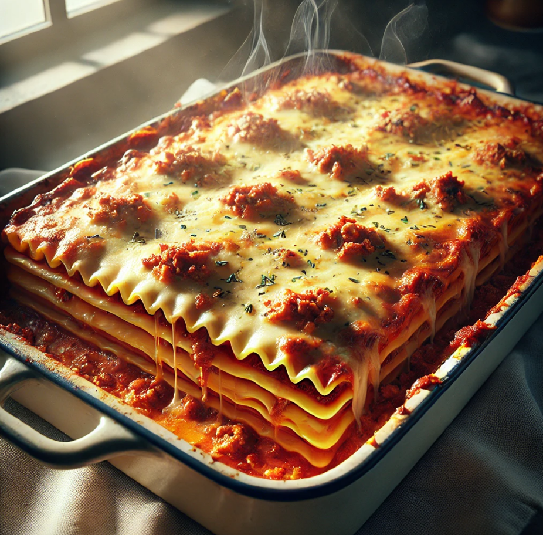

Italian Lasagna

Description
A classic homemade lasagna, layered with pasta, rich tomato meat sauce, creamy ricotta, and gooey melted cheese,
baked to golden perfection.
Ingredients
- 12 lasagna noodles
- 500g ground beef
- 2 cups tomato sauce
- 2 cups ricotta cheese
- 2 cups shredded mozzarella
- 1/2 cup grated Parmeggiano cheese
- 1 egg
- 2 cloves garlic, minced
- 1 tbsp olive oil
- Salt and pepper to taste
- Fresh basil leaves (optional)
Steps
- Boil lasagna noodles until al dente, then drain and set aside.
- In a pan, heat olive oil and sauté minced garlic. Add ground beef, cook until browned, then mix in tomato
sauce. Season with salt and pepper.
- In a bowl, combine ricotta cheese, egg, half of the Parmesan, and a pinch of salt.
- In a baking dish, layer noodles, meat sauce, ricotta mixture, and mozzarella cheese. Repeat layers,
finishing with mozzarella and remaining Parmesan on top.
- Cover with foil and bake at 375°F (190°C) for 25 minutes. Remove foil and bake for an additional 15 minutes,
or until the cheese is golden and bubbly.
- Let it cool for a few minutes, garnish with fresh basil, and enjoy!